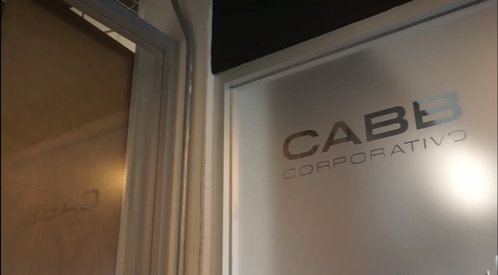
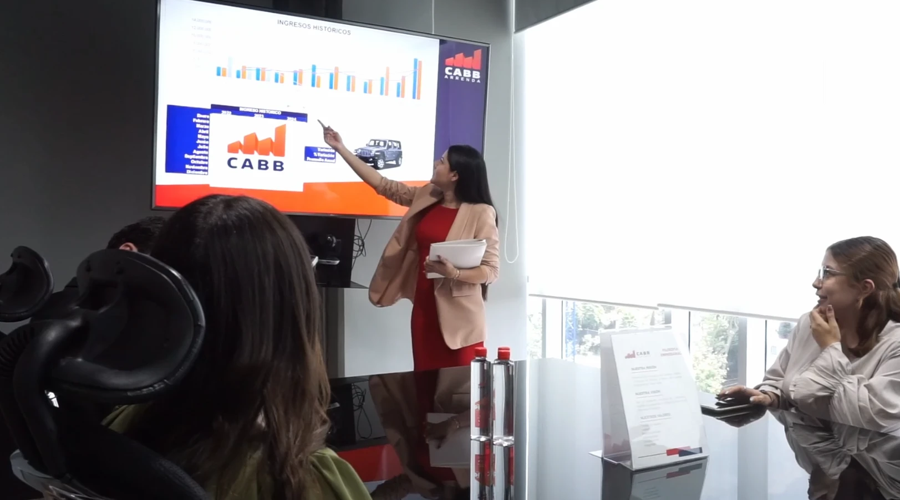
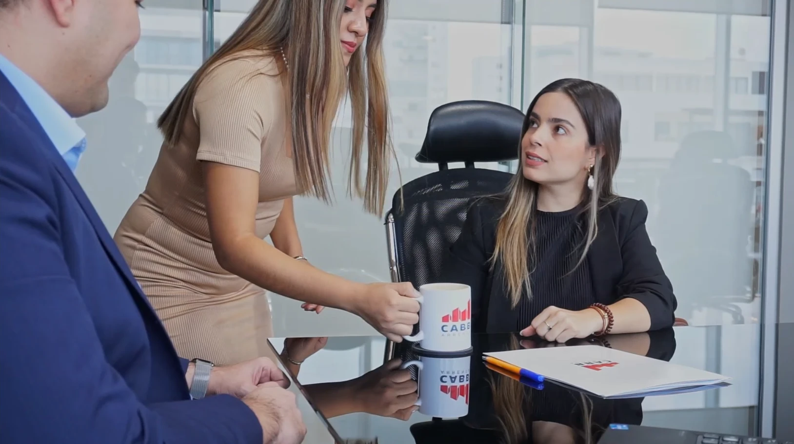
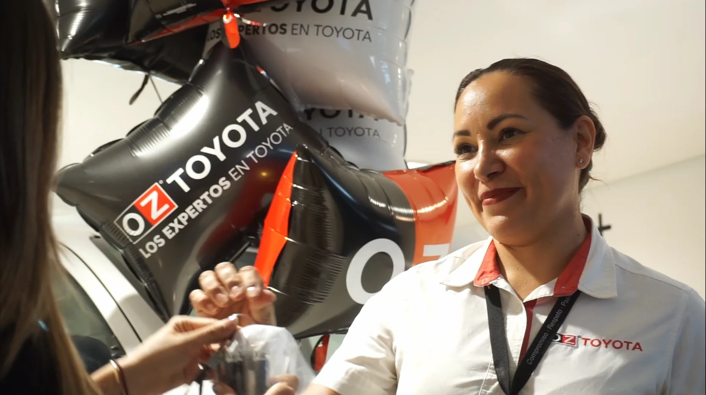
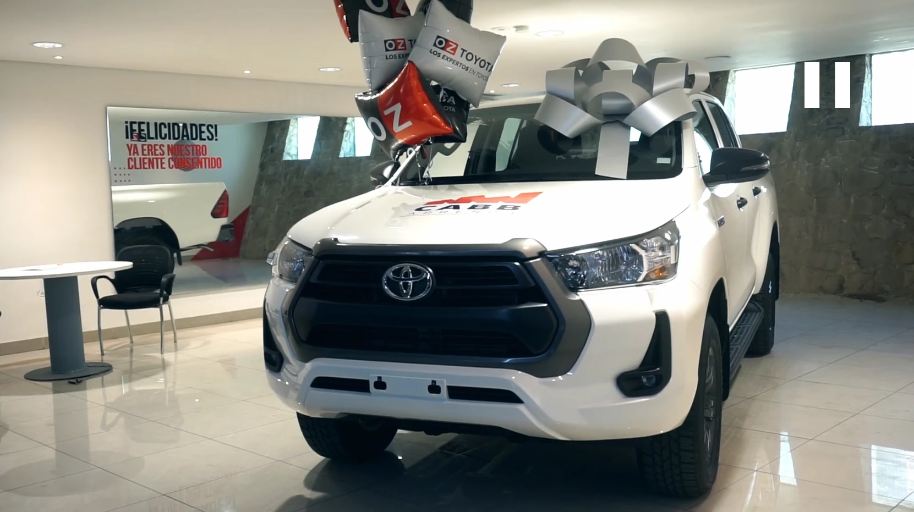

Caso · Video institucional
CABB Arrenda
El reto
Un video de aniversario tiende a quedarse en felicitación interna. Un institucional tiene que vender confianza hacia afuera. Esta pieza tenía que hacer las dos cosas sin quedarse a medias en ninguna.

La decisión creativa
La llamada fue corta: van a hacer un video de aniversario y quieren una propuesta. Lo que propuse fue no hacer un aniversario.
Si ya íbamos a armar una pieza, valía más usarla para contar la historia de la empresa, su proceso y, sobre todo, cómo se siente ser su cliente: cómo lo atienden y cómo lo cuidan. El aniversario dejó de ser el tema y pasó a ser el motivo.


Cómo se resolvió
Se grabó donde de verdad pasa: en sus oficinas. La recepción, el trato, la firma del contrato, la explicación. Y el cierre en la distribuidora de autos, cuando el cliente recibe las llaves y se va con su camioneta.
Encima, un guion hablado con la trayectoria de la empresa. La imagen muestra el proceso completo; la voz cuenta la historia.

